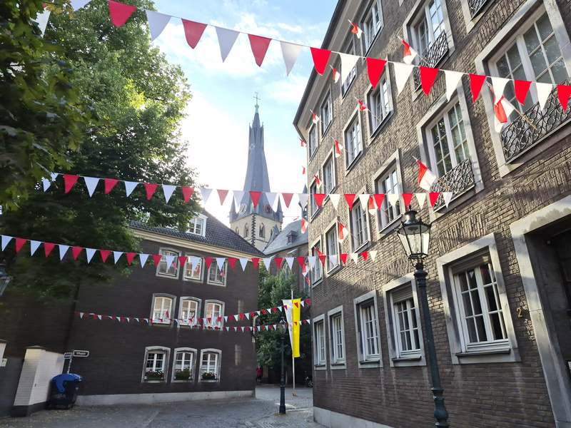
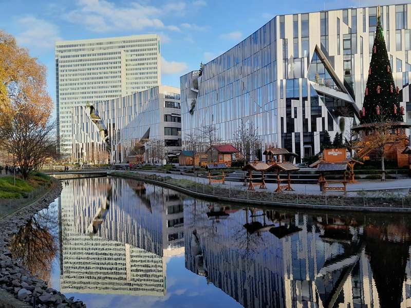
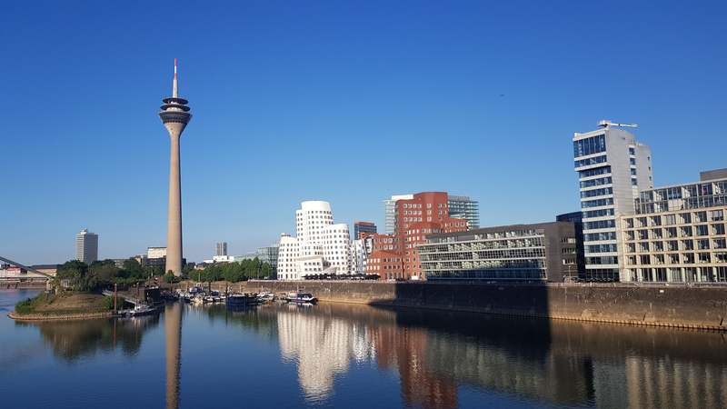
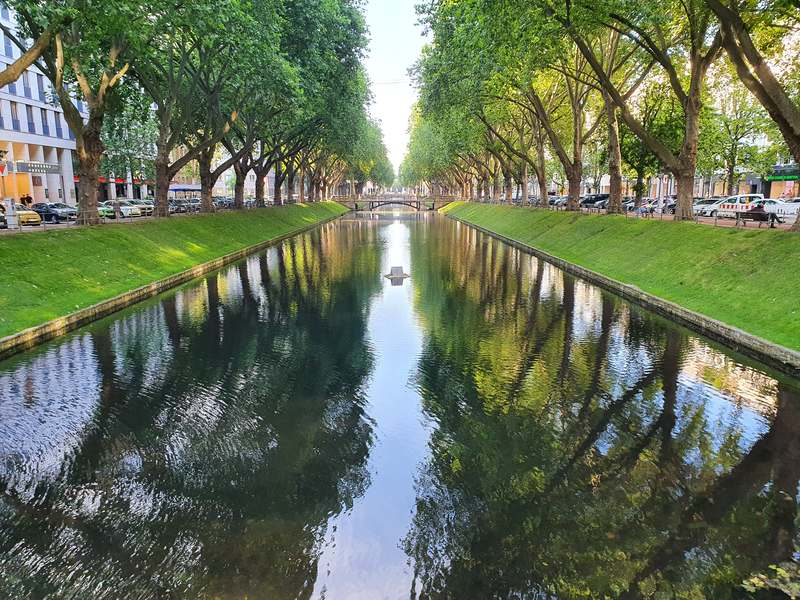
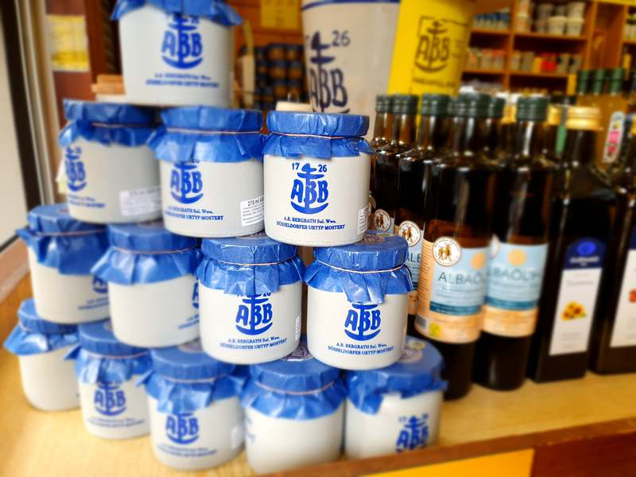
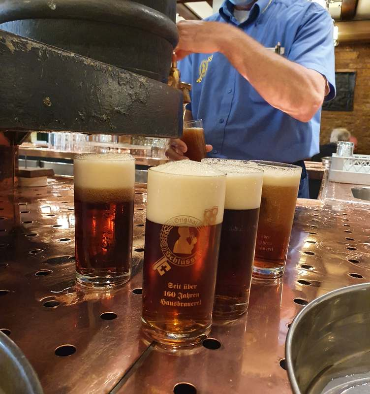
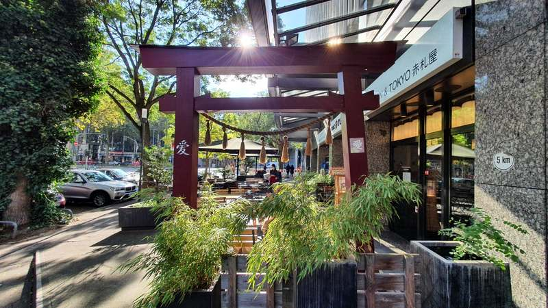
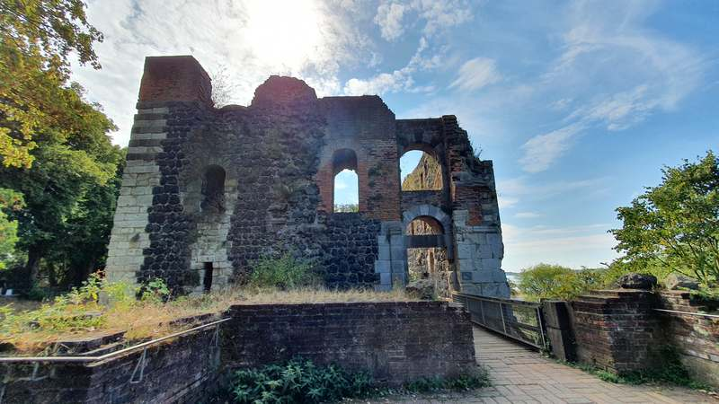
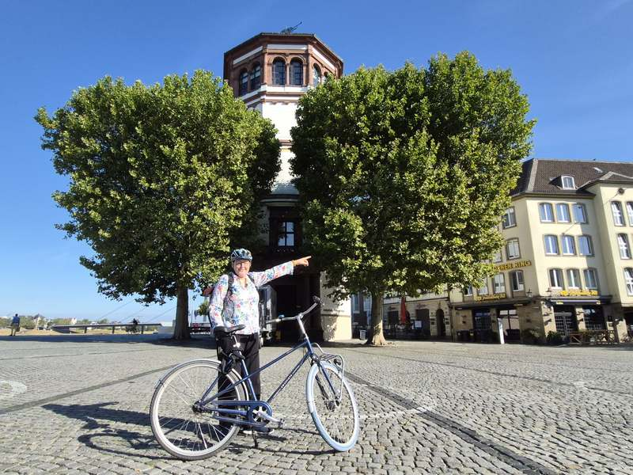

- Advent, Advent – ein Bummel über die Weihnachtsmärkte
- Architektur der Innenstadt (nicht nur Neue Mitte)
- Auf den Spuren des Dorfes von 1288
- Das Beste von Düsseldorf
- Die Kirchen der Altstadt
- Düsseldorf divers – Vielfalt und Verfolgung (Diversity-Führung)
- Düsseldorf kriminell (Altstadt und Kaiserswerth)
- Düsseldorf macht Landespolitik
- Düsseldorf und die Welt – Düsseldorf international
- Düsseldorfer Originale
- Filmstadt Düsseldorf
- Geldgeschichten und Wirtschaftsgeschichte
- Heißes Pflaster: Wie sich Düsseldorf auf den Klimawandel einstellt
- Jüdisches Düsseldorf
- Karneval und Brauchtum
- Köln versus Düsseldorf – ein amüsanter Schlagabtausch
- Lebendiges Rathaus
- Links und rechts der Düssel
- Natur in der Stadt – Düsseldorfs grüne Seite
- Natur: Düsseldorfer Natur, Fledermäuse, Vogelstimmen
- Neue Mitte
- Sagen und Legenden
- Starke Frauen – Düsseldorfs weibliche Seite
- Vom Dorf zur Stadt – Düsseldorfs Stadtentwicklung
Der schnelle Überblick
Alle Touren
Von unseren Top 10 bis zu allen Spezialführungen – hier finden Sie jedes Thema auf einen Blick. Und unsere Expertise endet nicht an der Stadtgrenze: Auch am Niederrhein, im Ruhrgebiet, in Köln und bis an den Mittelrhein führen wir Sie mit demselben Wissen und derselben Begeisterung.
Unsere Top 10
-
01 Altstadt
-
02 Neue Mitte
-
03 MedienHafen
-
04 Das Beste von Düsseldorf
-
05 Kulinarisches Düsseldorf
-
06 Altbier & die längste Theke der Welt
-
07 Klein-Tokio
-
08 Kaiserswerth
-
09 Mit dem Nachtwächter unterwegs -
10 Radtouren
Unsere Spezialführungen in Düsseldorf
eigene Infoseite auf Anfrage
- Altbier & die längste Theke der Welt
- Bühne frei: Düsseldorf macht Theater
- Die Säulenheiligen von Christoph Pöggeler
- Die Skulpturen von Bert Gerresheim
- In Düsseldorf spielt die Musik
- Joseph Beuys verstehen
- Kulinarisches Düsseldorf
- Kunst im öffentlichen Raum
- Kunst im Untergrund – die Wehrhahnlinie
- Kunst rund um den Nationalsozialismus
- Literaten, Poeten und Dramatiker
- Street-Art
Von Norden nach Süden – fahren Sie über die Punkte oder wählen Sie direkt ein Viertel.
eigene Infoseite auf Anfrage
- Kaiserswerth
- Nordpark
- Nordfriedhof
- Golzheim
- Friedhof Golzheim
- Grafenberg
- Pempelfort
- Gerresheim
- Oberkassel
- Ehrenhof und Hofgarten
- Flingern
- Altstadt
- Neue Mitte
- Japanisches Viertel
- Luxus und Glamour rund um die Kö
- Carlstadt
- Bahnhofsviertel
- Unterschätzte Kunstmeile Königsallee
- Medienhafen
- Unterbilk
- Oberbilk
- Volksgarten
- Benrath
Vom Niederrhein bis an den romantischen Mittelrhein – von Norden nach Süden.
Ihr Thema war nicht dabei?
Wir passen jede Tour gerne an Ihre Wünsche an – fragen Sie einfach unverbindlich an.